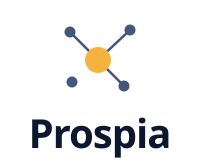

La señal — encontrar al cliente correcto entre el ruido y conectarlo, en piloto automático.
01 · Logo
Horizontal · principal

Apilado
Isotipo
Horizontal · oscuro
Tile · app icon
Favicon (simplificado)
El concepto. Un campo de contactos apagados (acero) y uno encendido en ámbar:
Prospia encuentra al prospecto correcto entre todos y lo conecta. El nodo central
es la señal — en versiones a color nunca cambia de color.
02 · Color
Navy
#0C1730
Ámbar señal
#F5B23D
Acero
#43577B
Niebla
#EEF3FB
El ámbar es el único color cálido — usalo con moderación, solo para lo que importa (CTA, dato clave, "lo hallado").
03 · Tipografía
Sora · Vendé en automático
Display / UI / logo · 400–800
Prospia encuentra clientes potenciales, los contacta por WhatsApp y mail, y hace el seguimiento.
Sora 400 · cuerpo
PIPELINE · 2.847 PROSPECTOS ACTIVOS
JetBrains Mono · etiquetas y datos
04 · Botones
05 · Uso
Espacio libre: mínimo la altura del isotipo. Tamaño mínimo del isotipo completo: 28 px
(más chico, usar el favicon simplificado). No deformar, no rotar, no recolorear el ámbar central,
no usar el ámbar como fondo de grandes áreas. Tokens en tokens.css.